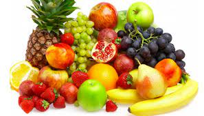

Healty Fruits and Vegetable
Sweet healty food!
Learn about the benefits of healthy and orcanic vegetables and fruits!
Some random information
Eating healthy is a difficult task as it is not easy to say ‘no’ to junk food. So, maybe repeating some “healthy eating” quotes to yourself will help you resist junk food. New year’s resolutions have to be backed by a concrete plan too. But, sometimes, plans may not help you fight the urge to eat unhealthily.
-Charushila Biswas